DRAFT: This article is being developed alongside a refactor. As of November 25, 2026, metatron implements the reference ring and its spans, record merge, join and spans, and the layout invariance of reads. The list ring (Polys: Space and Time) specifies the refactor in progress: its examples answer as the text states once it lands, and fail until then. The claims are stated precisely but not yet proven, and the notes marked Directions point to where the work goes next.
Introduction
In Ring Theoretic Distributed Computing [4], a program is a term of the stream ring. Its \(+\) branches a stream into computations that share nothing, its \(\cdot\) composes them in series, and distribution stops only where a reduce function contracts a stream. This article reads data the same way. A data structure is a term of a ring of references, whose \(+\) branches an address into independent references and whose \(\cdot\) extends an address. The question a distributed store asks is the one a distributed program asks: where may the term be split?
The answer is distributivity again. The record [a=>[b=>1,c=>2]] stores two values under the paths \(a\,b\) and
\(a\,c\), and as a term it is \(a \cdot (b + c)\): one address, \(a\), couples \(b\) and \(c\) into a single structure. The
stream {[a=>[b=>1]],[a=>[c=>2]]} is the term \(a\,b + a\,c\): two structures that share nothing but the letter \(a\).
Distributivity makes the two terms equal, so the two structures answer every read alike, yet they are stored
differently. The product is a dependent relationship: whatever holds \(a\) holds \(b\) and \(c\) with it. The sum is
independent: \(a\,b\) may sit in a document store in Japan and \(a\,c\) in a file in Ohio, and a read of every child of
\(a\) still answers \(\{1, 2\}\), only at a different cost in time and space [5].
\[ \begin{equation*} \underbrace{a \cdot (b + c)}_{\text{colocated}} \;=\; \underbrace{a\,b + a\,c}_{\text{placeable apart}} \end{equation*} \]

Factoring data colocates it, and expanding data partitions it, just as factoring a program shares work and expanding a program parallelizes it. A reduce is where a program must synchronize, and an overwrite is where data must.
Expanding repeats the address the two values share: \(a\) is written once in \(a \cdot (b + c)\) and twice in \(a\,b + a\,c\), once in each summand, so that each summand is whole wherever it is put. Database practice calls this denormalization: data repeated so that each part can be read where it lies, without a join that reaches the others. Distributed stores denormalize for that reason, and the ring tells the free repetition from the costly one. Distributivity repeats a factor, never a value. Each of \(1\) and \(2\) is still stored once, so the two layouts are one term and answer every read alike (Claim 5). Replication repeats a whole term, \(x + x = 2\,x\), which is another term: a fold over it answers as over the original only when the fold cannot count copies, that is, when it is idempotent (Claim 9). Either repetition is paid for at writes: a delete at \(a\) must reach every place that holds a term below \(a\) (Claim 12).
The sections define the reference ring and its spans, structures and their reads, layouts, placements across machines, and writes and deletes. They then read the polys every program builds: records, which extend a structure through space, and lists, which extend it through time, and set both beside paths and programs. The last section sets the two articles side by side.
The Reference Ring
Definition 1 (paths). Let \(\Sigma\) be a set of segments. A path is a word \(u = \sigma_1 \cdots \sigma_n\) over \(\Sigma\), and the empty word \(\varepsilon\) is the empty path. Paths multiply by concatenation, \(u \cdot v = uv\), so the paths form the free monoid \(\Sigma^*\).
Definition 2 (reference ring). Let \(\mathcal{C}\) be the coefficients of [1], a commutative ring with unity. A reference is a finite sum \(a = \sum_i c_i\,u_i\) of paths with coefficients, and the empty sum is \(0\). References add coefficientwise and multiply path by path,
\[ \begin{equation*} \Big(\sum_i c_i\,u_i\Big) \cdot \Big(\sum_j d_j\,v_j\Big) = \sum_{i,j} (c_i d_j)\,(u_i v_j), \end{equation*} \]
and they form the set \(\mathcal{U} = \mathcal{C}\langle\Sigma\rangle\).
\(\mathcal{U}\) is the free algebra on \(\Sigma\): polynomials whose variables are segments that do not commute. Its \(+\) is the branch, \(a + b = \{a, b\}\), and its \(\cdot\) is extension, \(a \cdot b = a/b\), as in the tractatus [5].

Figure 2 draws the product of Definition 2. A segment is drawn with its coefficient, a sum as its terms side by side, and a product as its factors one after the other. On the left, the product of two sums is two branches in series, and a route from the left end to the right takes one term of each factor. Multiplying out lists the routes. On the right is the sum of the four products, and each route's coefficient is the product of the coefficients it passes, so \(2a\) followed by \(3d\) is \(6\,a\,d\) (Claim 1). Read from right to left, the figure factors. The four routes allow it because they form the grid \(\{a, b\} \times \{c, d\}\) (Claim 2) and their coefficients form a product table, one number for each first segment times one for each second, which the cross products confirm: \(2 \cdot 3 = 6 \cdot 1\).
Proposition 1 (the reference ring). \(\langle\mathcal{U}, +, \cdot\rangle\) is a ring with zero \(0\) and unity \(\varepsilon\). Its \(\cdot\) distributes over \(+\) on both sides and is not commutative when \(\Sigma\) has two or more segments.
Proof. \(\mathcal{U}\) is the monoid ring of the free monoid \(\Sigma^*\) [8]. ◻
The laws of the ring are the engineering of addresses. A branch inside a path is a factored sum: a/{b,c}/d stands for
the two paths \(a\,b\,d\) and \(a\,c\,d\), written once. Paths that share a prefix and a suffix factor around what differs,
\(a\,b\,d + a\,c\,d = a\,(b + c)\,d\); paths that share nothing stay whole; and extension distributes over a branch.
mtron> </a/b/d> + </a/c/d>
==></a/{b,c}/d>
mtron> </a/b> + </c/d>
==></{a/b,c/d}>
mtron> </a/b> * </c/d>
==>/a/b/c/d
mtron> </a/{b,c}/d> * </e>
==></a/{b,c}/d/e>
In mtron, a uri is written in angle brackets, and a branch {b,c} inside a path is a factored sum. plus and mult
are \(+\) and \(\cdot\), the empty uri <> is \(\varepsilon\), and \(0\) is <noobj>, the uri of a hole ({1}noobj), as
the list ring's is [noobj]: noobj itself is a zero address, the stream's zero, which flows nothing.
Claim 1 (points multiply along a path). \((c\,u)(d\,v) = (cd)\,uv\), so a coefficient on any segment of a path is a coefficient on the whole path.
A coefficient counts copies of a whole path wherever it is written: a path through a doubled segment is a doubled path.
Claim 2 (rectangular factors). Distinct paths \(u_1, \ldots, u_n\) of length \(m\) sum to a product of branches \(\big(\sum_{\sigma \in S_1} \sigma\big) \cdots \big(\sum_{\sigma \in S_m} \sigma\big)\) if and only if \(\{u_1, \ldots, u_n\} = S_1 \times \cdots \times S_m\).
In practice, a set of addresses is one factored uri exactly when it is a grid: {a,b}/{c,d} is the four paths \(ac\),
\(ad\), \(bc\) and \(bd\), and any other set needs a sum of such grids.
Spans
A coefficient written after a uri's brackets is a span, and a span is a power: the path repeated, end to end. A negative span runs the path backward.
Definition 3 (converse and span). The converse of a path reverses its segments, \((\sigma_1 \cdots \sigma_n)^{\smile} = \sigma_n \cdots \sigma_1\), and extends to references additively, conjugating a complex coefficient. The span \(n \in \mathbb{Z}\) of a reference \(a\) is the power \(a^{n}\): the product of \(n\) copies of \(a\) for \(n > 0\), the empty path \(\varepsilon\) for \(n = 0\), and \((a^{\smile})^{-n}\) for \(n < 0\), as a negative span is the converse in [2] (Definition 5).
Claim 3 (the reference ring is a \(*\)-ring). The converse is an involution, \((a^{\smile})^{\smile} = a\), that reverses products, \((a\,b)^{\smile} = b^{\smile}\,a^{\smile}\), and preserves sums. It is no inverse: \(u\,u^{\smile} \neq \varepsilon\) for every path \(u \neq \varepsilon\), so \(u^{m}\,u^{n} = u^{m+n}\) holds only when \(m\) and \(n\) share a sign.
An engineer meets the converse as a route walked back. The walk /a/b/c from the root, reversed, is c/b/a/, which
ends at the root, and the graph walk OUT/created/IN, reversed, is IN/created/OUT. A route followed by its reverse
is a round trip, not a standstill: a/b and then b/a is a/b/b/a, just as following an edge out and back in reaches
a vertex's siblings rather than the vertex alone ([2], Corollary 9).
mtron> <a/b/c>{2}
==>a/b/c/a/b/c
mtron> <a/b/c>{-1}
==>c/b/a
mtron> </a/b/c>{-1}
==>c/b/a/
mtron> <http://m.com/a/b/c>{-1}
==><http://m.com/c/b/a>
mtron> <a/b> * <a/b>{-1}
==>a/b/b/a
mtron> {2}<a/b>{-2}
==>{2}b/a/b/a
mtron> <{2}a/b>{-2}
==><b/a/b/a{4}>
The brackets mark the locus of a coefficient. A point before them belongs to the object and is applied once to the
whole power, \(c\,u^{n}\): {2}<a/b>{-2} is two copies of b/a/b/a. A point inside them belongs to the path and runs
with it, \((c\,u)^{n} = c^{n}\,u^{n}\) ([2], Theorem 13): <{2}a/b>{-2} is
b/a/b/a four times. The locus is also a placement boundary. What sits inside the brackets is one object, stored as a
unit at one place; a point before them counts copies of the object, which a placement may share out (Claim 10).
In mtron, the span is written after the closing bracket, <u>{n}, and the instruction pow(n) is the span {n} at
run time, so pow(-1) is the converse. Inside the brackets a uri keeps the fURI's own spelling, {span}path{point},
so <a/b{2}> is the path a/b with its own point \(2\), and a bare a/b{2} reads the same way.
The converse reverses the path alone. A uri's scheme and authority are not steps of its path, so they stay where they
are: http://m.com/a/b/c reversed is http://m.com/c/b/a, still rooted at its host, and reversed again it is
http://m.com/a/b/c. A path with no authority counts its root as a step, which is why /a/b/c reversed ends at the
root. A parent step .. that the path cannot fold away has no converse, since it does not name the step it undoes.
A span is a power wherever it lands on a uri, not only where it is written: a computation that leaves a span on a uri,
as 'a.b'{3}.as(uri::T) does, yields a.b/a.b/a.b. A uri never holds a span it has not realized, so it is written as
it reads.
Directions.
- Rank. A product of branches is a rank-one tensor, and Claim 2 says when a sum of paths is one. The fewest products that sum to a structure is its tensor rank, which is NP-hard to compute [12]. Is the most compact layout of a structure a rank decomposition?
- Sharing. mtron factors out a common prefix and suffix. Factoring out every shared subtree instead gives a directed acyclic graph: the minimal automaton of the structure's paths, whose states are its distinct subtrees (the Myhill–Nerode theorem [13]). Is the minimal automaton the most shared layout, and how far is the sound sum from it?
Structures and Reads
Definition 4 (structure). Let \(X\) be the objects of [1]. A structure is a finite sum of arrows from paths to objects,
\[ \begin{equation*} D = \sum_i c_i\,(u_i \Rightarrow x_i), \qquad u_i \in \Sigma^*,\quad x_i \in X, \end{equation*} \]
where an arrow into the zero is no arrow, \(u \Rightarrow 0 = 0\). A reference extends a structure on the left, \(p \cdot (u \Rightarrow x) = (pu \Rightarrow x)\), bilinearly, and the structures form a left \(\mathcal{U}\)-module \(\mathcal{D}\).
An arrow \(u \Rightarrow x\) stores the object \(x\) at the address \(u\). Its coefficient is the number of copies stored
there, the point of [2]. A key-value store is a structure whose arrows
leave flat keys, a document store one whose arrows leave paths into nested documents, and a file system one whose
arrows leave directory paths. So is every store that keeps objects at addresses. A relational database is a structure
whose arrows leave a table, a row's key, and a column, and end at the cell where the row and the column cross. An HTML
or XML page is one whose arrows leave its nested tags and each child's place among its siblings, and a YAML, JSON, or
TOML file one whose arrows leave nested keys and list indices. A spreadsheet, a matrix, a property graph, a triple
store, a wide-column store, an object store, the domain name system, a directory service, a message broker's topics
(whose wildcards, + and #, metatron's paths borrow), a web service's resources, a time series, and a git repository
are structures too, and each one's addresses are paths:
| space | its arrows leave | an arrow |
|---|---|---|
| key-value store | a flat key | /session_42 => 'marko' |
| document store | a path into nested documents | /people/marko/address/city => 'Santa Fe' |
| file system | directories, then a file's name | /home/marko/todo.txt => 'sail south' |
| relational database | a table, a row's key, a column | /person/42/name => 'marko' |
| spreadsheet | a sheet, a column, a row | /budget/B/7 => 120.0 |
| HTML, XML | nested tags, and each child's position | /html/body/div/0/p/2 => 'ahoy' |
| YAML, JSON, TOML | nested keys and list indices | /database/replicas/0/port => 5432 |
| matrix, tensor | one index per axis | /m/0/2 => 7 |
| property graph | a vertex, then a property or an edge's label | /g/V/1/knows => {/g/V/2,/g/V/4} |
| triple store (RDF) | a subject, then a predicate | /marko/knows => josh |
| wide-column store [23] | a row key, a column family, a qualifier | /com.cnn.www/anchor/cnnsi.com => 'CNN' |
| object store | a bucket, then a key whose slashes it keeps flat | /photos/2026/11/sunset.png => 0x89504E47 |
| domain name system | its labels, read from the root | /com/example/www => '203.0.113.7' |
| directory (LDAP) | a distinguished name, read from the root | /com/example/people/marko/mail => 'marko@example.com' |
| message topics (MQTT) | topic levels | /home/kitchen/temperature => 21.5 |
| web resources (REST) | collections and identifiers | /users/42/orders/7/total => 19.99 |
| time series | a metric, a series, a timestamp | /cpu/host1/1795564800 => 0.42 |
| git repository | a ref, or a commit and a path in its tree | /refs/heads/main => '4b472e6' |
Two of them spell their paths backward. A domain name and a distinguished name write the leaf first,
www.example.com, so the path is the converse of the spelling (Definition 3). An edge of the graph ends at another
vertex's address, so a traversal reads through a value into the structure again, which is the join of records
(Definition 10). The definition does not tell them apart, and that is its purpose: one algebra for every space.
Definition 5 (read). The read of \(D\) at a path \(p\), the subtree of \(D\) at \(p\), and the part of \(D\) below \(p\) are
\[ \begin{equation*} D(p) = \sum_{u_i = p} c_i\,x_i, \qquad p^{-1}D = \sum_{u_i = p\,v_i} c_i\,(v_i \Rightarrow x_i), \qquad \pi_p(D) = \sum_{u_i = p\,v_i} c_i\,(u_i \Rightarrow x_i). \end{equation*} \]
A wildcard reads every child, \(D(p \ast q) = \sum_{\sigma \in \Sigma} D(p\,\sigma\,q)\).
The read is a lookup, the subtree is a change of directory to \(p\), and the part is everything below \(p\) with its
address kept. A wildcard reads a whole level: on a matrix stored row by row, *m/0/+ is the first row and *m/+/0 the
first column.
Claim 4 (reads are linear). For structures \(D, E\) and paths \(p, q\): \((D + E)(p) = D(p) + E(p)\), \(p^{-1}(D + E) = p^{-1}D + p^{-1}E\), \((pq)^{-1}D = q^{-1}(p^{-1}D)\), and \(p^{-1}(p \cdot D) = D\).
Linearity is the license to fan a read out. A read of a structure split across places is the sum of the reads of its parts: each place answers for what it holds, and the answers add.
Directions.
- Derivatives. The subtree \(p^{-1}D\) is a left quotient, Brzozowski's derivative [6] taken by a whole path. His identity splits a language into its empty word plus each letter followed by its derivative. A structure splits the same way, \(D = D_\varepsilon + \sum_{\sigma \in \Sigma} \sigma \cdot \sigma^{-1}D\), where \(D_\varepsilon\) holds the arrows stored at the empty path, so a structure is determined by its reads. Is a layout a representation of a coalgebra, and is the equivalence of layouts bisimulation [14]?
- A fundamental theorem. Extension undoes a read, \(p^{-1}(p \cdot D) = D\). A read undoes extension up to the rest of the structure, \(p \cdot p^{-1}D = \pi_p(D)\). Is there a calculus of data in which writes integrate what reads differentiate?
Layouts
Definition 6 (layout). A layout of a structure \(D\) is a sum \(D = O_1 + \cdots + O_m\) of objects, each an expression stored as one unit. Two layouts are equivalent when they denote the same structure.
A matrix \(m\) with entries \(a_{ij}\) has an entry-wise, a row-wise, and a nested layout, which are equivalent by distributivity:
\[ \begin{equation*} \sum_{i,j} \big(m\,i\,j \Rightarrow a_{ij}\big) \;=\; \sum_{i} m\,i \cdot \Big(\sum_{j} \big(j \Rightarrow a_{ij}\big)\Big) \;=\; m \cdot \Big(\sum_{i} i \cdot \sum_{j} \big(j \Rightarrow a_{ij}\big)\Big). \end{equation*} \]
The first stores every entry as its own object, the second one object per row, and the third the whole matrix as one
object. A column read answers alike in the row-wise layout m and the nested layout n:
mtron> m/0 -> [0,1,2,3]
==>[0,1,2,3]
mtron> m/1 -> [4,5,6,7]
==>[4,5,6,7]
mtron> n -> [[0,1,2,3],[4,5,6,7]]
==>[[0,1,2,3],[4,5,6,7]]
mtron> *m/+/0
==>0
==>4
mtron> *n/+/0
==>0
==>4
Claim 5 (layout invariance). Equivalent layouts give the same answer to every read, subtree, and wildcard read.
This is the guarantee a distributed store needs to move data without breaking its clients. Re-factor the term, by splitting a document into keys or gathering keys into a document, and no read changes. Only the cost of a read changes, which the tractatus tabulates for the three matrix layouts [5].
Claim 6 (what a layout shows). The number of objects in a layout is not a function of the structure it denotes.
Directions.
- Layout-safe instructions. An operation survives every change of layout exactly when it factors through the structure. Reads do. Counting objects, ordering them, and measuring a poly's length do not. Is this the same partition of the instruction set as the floatable runs and the cuts of [4]?
- Cost. A read's cost accumulates along a path, and a planner keeps the cheapest layout. A factorization is priced by evaluating it in the tropical semiring \(\langle \mathbb{R} \cup \{\infty\}, \min, + \rangle\). Choosing the cheapest factorization of a term generalizes choosing the cheapest parenthesization of a matrix chain, which dynamic programming solves [15].
Placement
Definition 7 (placement). A placement of a structure \(D\) over places \(1, \ldots, k\) assigns each object of a layout to one place. Place \(j\) holds \(D_j\), so \(D = D_1 + \cdots + D_k\). The maps \(\pi_j\) that keep each place's arrows form a complete set of orthogonal idempotents [8]:
\[ \begin{equation*} \pi_1 + \cdots + \pi_k = 1, \qquad \pi_i\,\pi_j = 0 \;\; (i \neq j), \qquad \pi_j^2 = \pi_j. \end{equation*} \]
The idempotents are the shard predicates of a store: every arrow is held at exactly one place.
Claim 7 (the data shard identity). For a placement, a path \(p\), and a cut \(r\) of [4] with combiner \(C(r)\), \(D(p)\,r = \big(D_1(p)\,r + \cdots + D_k(p)\,r\big)\;C(r)\).
Read from right to left, the identity sends the program to the data: each place folds what it holds at \(p\), and the partials meet at home. This is entry B of the menu in [4], the data-local shard.
Claim 8 (factoring colocates). A placement holds an object \(p \cdot (E + F)\) at a single place. The equivalent layout with the two objects \(p \cdot E\) and \(p \cdot F\) admits every placement of the first, and also those that hold the two apart.
The object is the unit of placement, so the product in a term is what keeps data together. [a=>[b=>1,c=>2]] is one
object and lives at one place. Its expansion is two objects that a placement may send to two continents, and every
read of the pair answers as before (Claim 5).
Claim 9 (replication needs idempotence). Suppose two places hold a common part \(R\). A commutative monoid fold over the sum of their reads answers as it would over \(D\) alone, for every \(R\), if and only if it is idempotent, \(x \oplus x = x\).
A maximum over two replicas of a part is the maximum; a sum over them counts the part twice.
Claim 10 (a point is a share). For \(n = n_1 + n_2\), \(n\,(p \Rightarrow x) = n_1\,(p \Rightarrow x) + n_2\,(p \Rightarrow x)\).
Directions.
- Peirce blocks. A complete set of orthogonal idempotents cuts a ring into blocks \(e_i R\, e_j\), the way a block matrix is cut [8]. When the objects of a structure are themselves addresses, as references are, the structure is a relation between addresses, and its blocks \(\pi_i D \pi_j\) with \(i \neq j\) hold the references from place \(i\) to place \(j\). Is the communication cost of a placement the mass of its off-diagonal blocks? Is the best placement then a minimum cut of the reference graph [16], approximated from its spectrum [17]?
- Overlapping shares. The deal of [4] needs only \(\sum_j \pi_j = 1\), while a placement needs orthogonality too. Shares that overlap are replication, and Claim 9 states what it costs. What does a deal with overlapping shares compute?
- Entry B.
law_sharddoes not yet lower Claim 7.
Writes and Deletes
Definition 8 (writes). A write adds, \(D \mapsto D + E\). A delete at a path \(p\) removes the part below it, \(\delta_p = 1 - \pi_p\). An overwrite stores \(x\) at \(p\) alone, \(\omega_{p,x}(D) = \delta_p(D) + (p \Rightarrow x)\).
Claim 11 (sums commute, overwrites do not). Writes commute. For overwrites at one path, \(\omega_{p,y} \circ \omega_{p,x} = \omega_{p,y}\), so the order of two overwrites decides the result.
Writes that are sums need no coordination: replicas that receive them in any order agree, which is the reading of conflict-free replicated data types as sums [9]. Two overwrites racing on one path need an order.
Claim 12 (two ways to delete). A delete distributes over a placement, \(\delta_p(D_1 + \cdots + D_k) = \delta_p(D_1) + \cdots + \delta_p(D_k)\), and needs to know nothing about what it removes. A subtraction \(D - c\,(p \Rightarrow x)\) removes an arrow only when it knows the arrow.
Claim 13 (the zero names no delete). Since \(k \Rightarrow 0 = 0\), the record \([k \Rightarrow 0]\) is the empty record, and writing it changes nothing.
none is a scar: a mark outside the ring that an update reads as \(\delta_k\), because the ring's own zero cannot say
delete. The ring may have a delete of its own.
Claim 14 (a delete is an idempotent). Read records as relations (Definition 9), and take the parametric unity \(1 \Rightarrow 1\) of [3]. Then \(\big((1 \Rightarrow 1) - (k \Rightarrow k)\big) \cdot D = \delta_k(D)\), and \((1 \Rightarrow 1) - (k \Rightarrow k)\) is idempotent.
Directions.
- Traces. Two writes commute when they touch disjoint paths, or when both are sums. A log of writes, taken up to swapping independent neighbors, is a Mazurkiewicz trace [18]. Do replicas converge exactly when they hold the same trace? Is the coordination-free fragment exactly the additive one? That would be a data analogue of the CALM theorem [19], with conflict-free replicated data types [9] as its sums.
- Relational algebra. A type is a predicate, and a predicate \(P\) is a diagonal idempotent, \(\Delta_P = \sum_{x \in P} (x \Rightarrow x)\). Composing with \(\Delta_P\) selects, composing with \(1 - \Delta_P\) deletes, composing with a bijection renames, and composing with a relation joins. Are Codd's operators [7] the relation ring acting on structures?
- Complement. Tarski's algebra of relations [20] has union, composition, converse, identity, and complement. The record ring of the next section has union, composition, identity, and the converse as its span \(-1\) (Claim 18). The complement of a key, \((1 \Rightarrow 1) - (k \Rightarrow k)\), exists because the unity is parametric. Is the scar the missing complement?
Polys: Space and Time
Monos, polys, and calls. metatron's type system has three kinds of object. A mono is one value: a
bool, anint, areal, astr, auri, orbytes. A call computes: aninstor acode. A poly binds objects together: arec, alst, or arel, the single arrow a record sums. The tractatus calls the polys polynomial data structures [22], and the name is exact. A polynomial is a sum of terms, each a coefficient times a product of variables. A record is such a sum, \([a \Rightarrow 1, b \Rightarrow 2] = (a \Rightarrow 1) + (b \Rightarrow 2)\) (Definition 9). A list is such a product, \([x, y, z] = x\,y\,z\), a monomial whose variables do not commute (Definition 11), and a brace in a slot makes it a sum, \([x, \{y, z\}] = x\,y + x\,z\). In both, a coefficient counts a term's copies, the point of [2]. The variables are objects of every kind, polys included, and a poly's operations read a variable only by equality or a predicate (Claim 27). A uri is a mono, one address, though its own value is a polynomial in segments (Definition 2).
A record and a list are the polys that collect, and every program builds both. They extend a structure in two directions. A record extends it through space. It is a branch of arrows out of its keys, so its comma is a \(+\), and two records superpose wherever their keys meet. A list extends it through time. It is a word of objects, so its comma is a \(\cdot\): a timeline whose moments follow one another. In both, \(+\) branches and \(\cdot\) composes.
In both, too, the operations rearrange structure only. A poly compares what it holds, by equality or by a predicate, and never applies its contents' own operations: adding two lists of numbers never adds a number. The contents' operations enter at one place, where a poly is run as a program (Claim 22).
| poly | extends through | its comma | \(+\) | \(\cdot\) | converse |
|---|---|---|---|---|---|
record [k=>v, …] | space | \(+\) | merge | join | transpose |
list [x, y, …] | time | \(\cdot\) | branch | concatenation | reversal |
Records
Definition 9 (record). A record is the sum of the arrows out of its keys, \([k_1 \Rightarrow v_1, \ldots, k_n \Rightarrow v_n] = \sum_i (k_i \Rightarrow v_i)\). A record nested at a key extends the key, \(\big(k \Rightarrow [j \Rightarrow v]\big) = (kj \Rightarrow v)\).
Claim 15 (merge is the sum). Records merge the way structures add. Below a shared key they merge, \((k \Rightarrow E) + (k \Rightarrow F) = k \cdot (E + F)\); at a shared address their values branch; and a key into the zero vanishes. Merge is a commutative monoid whose identity is the empty record.
Merge is what a multimap does: put two records together, and a key they share holds both values.
mtron> [a=>b,c=>d] + [b=>e,d=>f]
==>[a=>b,c=>d,b=>e,d=>f]
mtron> [a=>b] + [a=>c]
==>[a=>{b,c}]
mtron> [a=>[x=>1]] + [a=>[y=>2]]
==>[a=>[x=>1,y=>2]]
The first answers [a=>b,c=>d,b=>e,d=>f]. The second branches the values at the shared key, [a=>{b,c}], and the
third merges below it, [a=>[x=>1,y=>2]], because a nested record extends its key.
The record's product is a lookup through two records: follow an arrow out of a key, then continue along the arrow out of the value it reached.
Definition 10 (join). For arrows \(a \Rightarrow b\) and \(h \Rightarrow r\),
\[ \begin{equation*} (a \Rightarrow b) \cdot (h \Rightarrow r) = [\,b \vDash h\,]\;\big(a \Rightarrow (b \Rightarrow r)\big), \end{equation*} \]
where \([\,b \vDash h\,]\) is \(1\) when the second record holds \(h\) at \(b\)'s address (the key, a path through it, or a
stored pattern \(b\) matches, read as every read is, in any layout), or when \(h\) is a program or a type that answers
\(b\), and \(0\) otherwise. The join keeps the middle: its product is the walk
\(a \Rightarrow b \Rightarrow r\). The range \(r\) is a value, a program included, and is never run, so
[a=>5] * [_=>plus(1)] is [a=>5=>plus(1)]. A span is the object's, so <b>{5} is the one object b/b/b/b/b,
and only a key equal to it, or a pattern it matches, meets it. As \(\Rightarrow\) nests to the right, a walk ends at its
innermost range and the join splices there, and a record held at a key is the walks through its keys
(Definition 9). The join extends bilinearly to records, a point multiplying onto the joined walk. A predicate's test
is a filter: it keeps or drops an arrow, and never counts it.
Claim 16 (the record ring). Records in merge's normal form (no empty record held at a key, a key's records merged
into one) form a ring under merge and join, with the empty record \([\Rightarrow]\) as zero
and the parametric unity \(1 \Rightarrow 1\) of [3] as unity ([_=>_],
the walk of length zero at every object). On records whose keys and ranges are values it is the path algebra of the
graph their arrows draw, and contracting each walk to its endpoints maps it onto the ring of finitely supported
matrices over the objects with the parametric unity adjoined, the join onto the matrix product. A key that is a predicate \(P\) is the diagonal idempotent \(\Delta_P\) followed by the arrow's head.
A database engineer has met this ring under other names. A record is a sparse matrix, or a two-column table, and the
join is the relational join of the first record's values with the second's keys, keeping the joined column, with
bag semantics: two routes through different middles are two walks, and projecting to the outer columns, the
contraction, counts them in the coefficient of \(a \Rightarrow e\). A predicate key is a WHERE clause, and the unity is the table that maps everything to itself.
mtron> [a=>b,c=>d] * [b=>e,d=>f]
==>[a=>b=>e,c=>d=>f]
mtron> [1=>2] * [?>1=>3]
==>[1=>2=>3]
mtron> [a=>b,a=>c] * [b=>e,c=>e]
==>[a=>{b=>e,c=>e}]
These answer [a=>b=>e,c=>d=>f]; [1=>2=>3], since 2 satisfies the predicate ?>1 and stays as the middle; and
[a=>{b=>e,c=>e}], the two routes from a to e, which contract to [a=>{2}e]. A record negates arrow by arrow, with the point on the value, [a=>b].neg() is [a=>{-1}b]: a point on both
ends of an arrow would cancel itself.
Claim 17 (a record's sum forgets its rows). Merge adds arrows at their keys and keeps no record of which arrows arrived together: if \(r'\) and \(s'\) exchange the values of \(r\) and \(s\) at a shared key, then \(r + s = r' + s'\). Arrows stay together only below a shared address, as in \((p \Rightarrow r) + (q \Rightarrow s)\), and the address that keeps them together also colocates them (Claim 8).
mtron> [name=>marko,age=>29] + [name=>josh,age=>32]
==>[name=>{marko,josh},age=>{29,32}]
mtron> [name=>marko,age=>32] + [name=>josh,age=>29]
==>[name=>{marko,josh},age=>{32,29}]
Both answer [name=>{marko,josh},age=>{29,32}]: which name went with which age is gone. In space an address is all a
value has, so this is right. Two records stay two rows only when they are filed under two row keys, the primary key of
a table, and that key is also what keeps each row in one place.
Claim 18 (the record converse). The converse of a record transposes its arrows, \(\big(\sum_i (k_i \Rightarrow v_i)\big)^{\smile} = \sum_i (v_i \Rightarrow k_i)\), an involution that reverses joins. A record's span is its power under the join: \(r^{2}\) reaches two arrows away, \(r^{0}\) is the unity, and \(r^{-1}\) is the transpose. A span range is the sum of its powers ([2], Definition 3), so \(r^{[1,\infty)}\) is the transitive closure, finite when some power of \(r\) is zero, as it is when \(r\) has no cycle. A key that is a predicate has no converse a record can list: it relates its value to every object the predicate admits.
The transpose is an inverted index, filing each key under the value it held. The square is the two-hop query, friends of friends, and the closure is reachability. On a cycle the closure counts routes without end, so it is finite only where the relation is acyclic.
mtron> [a=>b]{-1}
==>[b=>a]
mtron> [a=>b,b=>c]{2}
==>[a=>b=>c]
mtron> [a=>b,b=>c]{+}
==>[a=>{b,b=>c},b=>c]
These answer [b=>a], [a=>b=>c], and [a=>{b,b=>c},b=>c], every walk the arrows draw, which contract to every
pair they connect.
| record | relational and graph practice |
|---|---|
| merge, \(r + s\) | multimap put, bag union |
| join, \(r \cdot s\) | equi-join of \(r\)'s values with \(s\)'s keys, joined column kept |
| predicate key, \(\Delta_P\) | WHERE on the key |
| transpose, \(r^{-1}\) | inverted index |
| power, \(r^{n}\) | \(n\)-hop traversal |
| closure, \(r^{[1,\infty)}\) | transitive closure, reachability |
| complement, \((1 \Rightarrow 1) - \Delta_P\) | delete the keys in \(P\) (Claim 14) |
Directions.
- Contracted or slotted. Settled: the join keeps the middle, so the nested arrow
\(a \Rightarrow (b \Rightarrow e)\) is the route a graph traversal's
path()reports, and contracting it to \(a \Rightarrow e\) maps the record ring onto the relation ring. A list of records is still the join not yet taken (Claim 28). - A join through a nested record. Settled: a nested record is the walks through its keys, so it joins on its leaves,
and the join reads its argument by address, as every read does (Claim 5), so its layout does not matter:
[x=>a] * [a/b=>1]and[x=>a] * [a=>[b=>1]]both answer[x=>a=>b=>1]. - Matrices. The relation ring is the ring of finitely supported matrices, so the matrix multiplication of entry M in [4] is composition in this ring, and that entry's addressed union is the indexed sum of the next section.
- A zero inside the type. Today a sum of relations is a stream of relations, which leaves the type. The code ring names its zero as an instruction that outputs nothing. A relation's zero could be named the same way, keeping its sum inside the type.
Lists
A list is a timeline: a moment, then the next. It adds as alternatives add, two timelines side by side, and it multiplies as time does, one timeline after another.
Definition 11 (list). A list is a word of objects, $[x_1, \ldots, x_n] = x_1 \cdots x_n \in \mathcal{C}\langle X\rangle$, and the empty list \([\,,]\) is the empty word. A brace in a slot is a sum at that moment, \([x, \{a, b\}, y] = x\,(a + b)\,y\), a branch, and a list in a brace is a sub-word that splices, as a path's branch holds sub-paths: \([x, \{[a,b], c\}, y] = x\,(a\,b + c)\,y\). A stream of lists is a sum of words. The converse of a list reverses its letters, and its span is its power (Definition 3).
Claim 19 (the list ring). Lists form the free algebra \(\mathcal{C}\langle X\rangle\), a ring with zero \(0\), the
list of one hole [noobj] through which no word runs, and unity \([\,,]\): the reference ring over objects instead of
segments. A list multiplies by concatenation and adds as a
path adds, factoring out a common prefix and suffix, \([a,b,c] + [a,d,c] = [a,\{b,d\},c]\), as
\(a\,b\,c + a\,d\,c = a\,(b + d)\,c\).
A list and a uri are one algebra over two alphabets: a uri is a word of segments, a list a word of objects. What holds for paths holds for lists: rectangular factors (Claim 2), points along a path (Claim 1), and the converse (Claim 3).
Claim 20 (structure, not objects). The list ring reads its letters only by equality. No sum, product, or converse of lists applies a letter's own operations.
Claim 21 (the list converse). Lists with the reversal form a \(*\)-ring, as paths do (Claim 3), and the converse is no inverse: \([a,b] \cdot [a,b]^{\smile} = [a,b,b,a]\). A list's converse never needs a letter's. A value run as a step has no converse that can be listed, since a constant relates its value to every object ([2], Negative Spans: the Converse), but a letter is held, not run.
mtron> [1,2,3] * [4,5,6]
==>[1,2,3,4,5,6]
mtron> [a,b,c] + [a,d,c]
==>[a,{b,d},c]
mtron> [1,2,3] + [4,5,6]
==>[{[1,2,3],[4,5,6]}]
mtron> [1,2,3]{-1}
==>[3,2,1]
mtron> [1,2]{2}
==>[1,2,1,2]
These answer [1,2,3,4,5,6]; [a,{b,d},c]; [{[1,2,3],[4,5,6]}], two timelines that share no moment, branched at
the list's one slot, as <1/2/3> + <4/5/6> is <{1/2/3,4/5/6}>; [3,2,1]; and [1,2,1,2]. A span after a list's
closing bracket is that list's power, while a span on a letter repeats the letter in its place: [3{2}] is [3,3].
As with uris, x + y is the instruction plus(y) applied to x, so a point on x floats over it
([2], Theorem 3), and the sum of two pointed lists is written as their
stream.
A list of steps is a program that has not been run: it can be built, spliced, and reversed as a list, and run when it is ready.
Claim 22 (the fold). The ordered fold, \(\mathrm{fold}\) (>|), is the unique ring homomorphism from the list ring
into the stream ring of [4] that sends each letter to the step it denotes,
a value to the constant that answers it and an instruction to itself:
\[ \begin{equation*} \mathrm{fold}(u\,v) = \mathrm{fold}(u)\,\mathrm{fold}(v), \qquad \mathrm{fold}(u + v) = \mathrm{fold}(u) + \mathrm{fold}(v), \qquad \mathrm{fold}([\,,]) = 1. \end{equation*} \]
A brace in a slot folds to a branch, and a program is a list modulo the laws of its steps. The homomorphism holds up to the cuts of [4]: before a reduce, a branch folds to one reduction of the merged stream, while the list ring distributes it. The fold commutes with the converse only where each step is its own converse, as a filter is ([2], Theorem 14). Otherwise \(\mathrm{fold}(w)^{\smile}\) is the fold of the reversed list with each step replaced by its converse.
mtron> [1,plus(2),plus(3)]>|
==>6
mtron> {[1,plus(2),plus(3)],[1,mult(2),plus(5)]}>|
==>6
==>7
mtron> [1,{plus(2),mult(2)},{plus(3),plus(5)}]>|
==>6
==>5
==>8
==>7
These answer 6; {6,7}, two timelines run as two programs; and {6,8,5,7}. The third has a branch at each step
instead of two whole timelines, and its fold crosses them: \(1 + 2 + 5\) and \(1 \cdot 2 + 3\) are timelines neither list
held (Claim 26).
Written to a space, a list is laid out by its positions, as a matrix's rows are in Layouts: its moments become addresses.
Definition 12 (layout of a list). Laid out, a list is the sum of the arrows out of its positions, \([x_0, \ldots, x_{n-1}] \mapsto \sum_{i<n} (i \Rightarrow x_i)\).
A list is one object, and its order is a dependency, so a placement holds it whole (Claim 8). Laid out, its positions are independent arrows that a placement may separate, and a read of the timeline needs every position back.
Claim 23 (the indexed ring). Laid-out lists add slot by slot and multiply by composition, \((u \cdot v)_i = v_{u_i}\). Their zero is the empty list, and a slot holding the zero is no slot. Their unity is the parametric unity \(1 \Rightarrow 1\), which no list is.
Claim 24 (linear and multilinear). A laid-out list is linear in its slots and a list is multilinear: \([c\,x_1, \ldots, c\,x_n]\) is \(c\,[x_1, \ldots, x_n]\) in the indexed ring and \(c^{n}\,[x_1, \ldots, x_n]\) in the list ring. A list therefore negates as a whole, \(-[x_1, \ldots, x_n] = (-1)\,[x_1, \ldots, x_n]\), while a point \(-1\) on every slot multiplies it by \((-1)^{n}\).
Claim 25 (no hybrid ring). On lists that keep their empty slots, let \(\oplus\) be the slot sum of the indexed ring and \(\otimes\) the concatenation of the list ring. The two share the empty list as their identity, so together they form no ring, and \(\otimes\) distributes over \(\oplus\) on neither side. They satisfy the interchange law \((a \oplus b) \otimes (c \oplus d) = (a \otimes c) \oplus (b \otimes d)\) whenever \(|a| = |b|\).
Claim 26 (lockstep is no sum). The slot sum, read back as words, advances two lists slot against slot: \([x_1, \ldots, x_n] \oplus [x_1, \ldots, x_n] = 2^{n}\,[x_1, \ldots, x_n]\), where a sum doubles, and \(u \oplus v\) holds every timeline that crosses from \(u\) to \(v\) between slots. It is lockstep, the synchronous product of SCCS [10], and it lives outside the list ring.
Lockstep is the right sum for space and the wrong one for time. A record merges the values at a shared key because a key is an address (Claim 17). A moment's address is the history that reaches it: slot \(i\) of \(u\) and slot \(i\) of \(v\) share an index, not a past, and superposing them by index reads time as space.
Directions.
- A list in a brace. Settled: a path's branch holds whole sub-paths,
<x/{a/b,c/d}/y>, and a list in a brace is a sub-word, so[x,{[a,b],[c,d]},y]is the spliced \(x\,(a\,b + c\,d)\,y\), while a list outside a brace is a letter. - A sum that does not factor. Settled: \([1,2,3] + [4,5,6]\) is one list with a branch of sub-lists,
[{[1,2,3],[4,5,6]}], since a stream of the two would not stay their sum under the next \(+\), which maps over a stream. - The list ring's zero. Settled (Marko, 2026-11-25): noobj is not in the list ring's carrier;
[noobj]is. No word runs through a hole, so the list of one hole is the sum of nothing and of words that cancel,[a,b,c] - [a,b,c]is[noobj], and it absorbs a product,[1,2] * [noobj]is[noobj]. Any list through a hole holds no word, so it is the zero too:[1,2] * [noobj,noobj]is[noobj]. A record can name it, so mtron declares the list ring, its additive group and its monoids, as it does the record ring's. - The reference ring's zero. Settled (Marko, 2026-11-25): as with lists, noobj is not in the carrier;
<noobj>, the uri of a hole ({1}noobj), is. It adds nothing to a sum, a sum whose terms cancel answers it,</a/b/c> + </a/{-1}b/c>is<noobj>, and it absorbs a product on either side. A point on any segment negates its term, so the ring's inverses are in the points. Only the uri writtennoobjalone is the hole: a path through a segment named noobj is an address. A record can name it, so mtron declares the reference ring, its additive group and its monoids. - Spans on nested lists. The span after an inner list's bracket is that list's power, so
[[1,2]{2}]is[[1,2,1,2]], and the outer list's span repeats it,[[1,2]]{2}is[[1,2],[1,2]]. Is the bracket the span follows always the one whose ring takes the power? - Strings. A string is a word of characters and adds by concatenation today, which is the list ring's product. Does it follow lists?
- Lockstep's name. Lockstep deserves an operation of its own. What does mtron call it?
- Positions as exponents. A third reading sends position \(i\) to the monomial \(t^{i}\), so a list becomes a polynomial in \(t\): lists add slot by slot and multiply by convolution. mtron's slot product is this convolution with its terms ungrouped.
- Interleavings. The free algebra carries a second product, the shuffle, which sums every interleaving of two words
that keeps each word's own order [21]. A sorted merge picks the one sorted interleaving of two sorted runs. Does
kmerge, and with it the causal law of top-k in [4], live in the shuffle algebra?
Polys in Polys
A poly may hold anything, other polys included, and its operations do not look inside what it holds.
Claim 27 (polys hold letters). A poly's sum, product, and converse read what its slots hold only by equality or a predicate. A record held at a key is the exception that is none: it extends the key (Definition 9), so merge recurses into it.
mtron> [a=>[1,2]] + [a=>[1,3]]
==>[a=>{[1,2],[1,3]}]
mtron> [[a=>b],c,d] + [[a=>b],d,e]
==>[[a=>b],{[c,d],[d,e]}]
mtron> [[a=>b],c] * [[b=>e]]
==>[[a=>b],c,[b=>e]]
The first branches two list letters at one key, [a=>{[1,2],[1,3]}], which the list ring factors to
[a=>[1,{2,3}]]. The second has a record as a shared first moment, and its sum is
\([a \Rightarrow b]\,(c\,d + d\,e)\): the record appears once, neither doubled, as lockstep would have it, nor merged
into a neighbor, which would apply a record's operation from inside a list. The third concatenates,
[[a=>b],c,[b=>e]], and the records' join waits for a fold.
Polys and Code
Paths, lists, records, and programs are four readings of one ring pattern. Each has a branch for its \(+\), a way of following one thing with another for its \(\cdot\), and a converse for its span \(-1\). They differ in what the product tests where two pieces meet.
| list (time) | path | record (space) | program [4] | |
|---|---|---|---|---|
| its comma | \(\cdot\) | \(\cdot\) (/) | \(+\) | \(\cdot\) (.) |
| \(+\) | branch | branch | merge | branch |
| \(\cdot\) | concatenation | extension | join | composition |
| tested at the joint | nothing | nothing | the value against the key | the range against the domain |
| zero | \(0\) | \(0\) | \([\Rightarrow]\) | the step that answers nothing |
| unity | \([\,,]\) | \(\varepsilon\) | \(1 \Rightarrow 1\) | the identity |
| converse, the span \(-1\) | reversal | reversal | transpose | the program run backward |
Claim 28 (records are steps). An arrow is a guarded step, \((k \Rightarrow v) \mapsto \mathrm{is}(k) \cdot v\):
keep what equals or satisfies \(k\), then answer \(v\). This maps the record ring into the stream ring, merge to branch
and join to composition, forgetting the middle a walk keeps. A list of records folds to their join,
\(\mathrm{fold}([\,r_1, \ldots, r_n]) = r_1 \cdots r_n\): a program written as a timeline of steps through space. The
join runs no code a record holds as a value, while a key that acts runs as the WHERE it is (Claim 16) on the ends it
meets, so the fold is the product whatever the records hold. A live record holds no walks and applies as itself,
running whatever its apply runs: a space passes a value on, and a parser parses a str. A walk through a branch that
does not connect is the zero, \([\Rightarrow]\), which drops from what the branch answers as it drops from a sum, and a
branch none of whose walks connects is the zero.
mtron> [[a=>b],[b=>e]]>|
==>[a=>b=>e]
This answers [a=>b=>e].
A list is a program that does not yet connect: its steps sit side by side until the fold feeds each one's output to the next one's input. A record is a step already connected, a lookup table with an arrow per key. Between them they cover what a program is: what happens at a moment, and the order of the moments.
Directions.
- Arrows as products. In the object ring of the tractatus [5], the product of two objects is an arrow, \(x \cdot y = (x \Rightarrow y)\). A list is then a product of letters with no joint, and the join splices two arrows at the joint they share. Is the list ring the tensor algebra of the objects and the join its splice, so that a list being a program not yet connected says that composition is contracted concatenation?
The Mirror
| Distributed Computing [4] | Distributed Structures | |
|---|---|---|
| term | a program in the stream ring | a structure in the reference ring |
| \(+\) | branch: placement is free | branch: placement is free |
| \(\cdot\) | composition in series | extension, which colocates (Claim 8) |
| linear part | the floatable run | the read (Claim 4) |
| synchronization | the cut, a reduce | the overwrite (Claim 11) |
| identity | the shard identity | the data shard identity (Claim 7) |
| partition | the deal, \(\sum_j \pi_j = 1\) | the placement, orthogonal idempotents |
| redundancy | entry H | replication needs idempotence (Claim 9) |
| invariance | the answer at every hop and schedule | every read in every layout (Claim 5) |
| converse | the program run backward [2] | the path and the list reversed, the record transposed (Claims 3, 18, 21) |
Directions.
- A module. Programs act on data: a read, a fold, and a write are each a function applied to a structure. If structures form a module over the code ring, then the data shard identity is the computing shard identity acting through the module. "Data and code compile alike" would then be a theorem rather than an analogy.
Conclusion
NOTES:
- Data distributes by the same reading as programs. A structure is a term of the reference ring, \(+\) is independence and \(\cdot\) is dependence, and factoring colocates while expanding partitions.
- Every layout of a structure is a factorization of one term, so every read answers alike in every layout; only its cost changes.
- Records extend a structure through space and lists through time. Their \(+\) superposes and their \(\cdot\) composes, and their converse, the span \(-1\), transposes a record and reverses a list or a path.
- The record ring is the path algebra of its keys' graph, and contracting its walks maps it onto the matrix ring. Merge, join, transpose, powers, and closures are the relational and graph operations, and a record's sum forgets its rows unless an address keeps them, which also colocates them.
- The list ring is the reference ring over objects. A list is a program not yet run, and the fold runs it.
- Lockstep, the slot sum, is space's sum read onto time: it belongs to records, not to lists.
- [To be written: what is open — a list in a brace, a sum that does not factor, spans on nested lists, and the tensor reading of arrows.]
References
- Rodriguez, M.A., "Stream Ring Theory," S/V Red Herring's Ship's Log: Chronicles in the Sea of Cortez, pages 10–40, Mulegé, Baja California Sur, México, February 2019.
- Rodriguez, M.A., Dr. Stynx, "A Span and Point Coefficient Algebra for Stream Rings."
- Rodriguez, M.A., Dr. Stynx, "Parametric Identities in Ring Theory."
- Rodriguez, M.A., Dr. Stynx, "Ring Theoretic Distributed Computing."
- "Uniform Resource Identifiers," the metatron tractatus.
- Brzozowski, J.A., "Derivatives of Regular Expressions," Journal of the ACM 11(4), pages 481–494, 1964.
- Codd, E.F., "A Relational Model of Data for Large Shared Data Banks," Communications of the ACM 13(6), pages 377–387, 1970.
- Lam, T.Y., "A First Course in Noncommutative Rings," Graduate Texts in Mathematics 131, Springer, 1991.
- Shapiro, M., Preguiça, N., Baquero, C., Zawirski, M., "Conflict-free Replicated Data Types," Stabilization, Safety, and Security of Distributed Systems (SSS 2011), Lecture Notes in Computer Science 6976, pages 386–400, 2011.
- Milner, R., "Calculi for Synchrony and Asynchrony," Theoretical Computer Science 25(3), pages 267–310, 1983.
- Howie, J.M., "Fundamentals of Semigroup Theory," London Mathematical Society Monographs, Oxford University Press, 1995.
- Håstad, J., "Tensor Rank is NP-complete," Journal of Algorithms 11(4), pages 644–654, 1990.
- Nerode, A., "Linear Automaton Transformations," Proceedings of the American Mathematical Society 9(4), pages 541–544, 1958.
- Rutten, J.J.M.M., "Universal Coalgebra: a Theory of Systems," Theoretical Computer Science 249(1), pages 3–80, 2000.
- Cormen, T.H., Leiserson, C.E., Rivest, R.L., Stein, C., "Introduction to Algorithms," third edition, MIT Press, 2009.
- Kernighan, B.W., Lin, S., "An Efficient Heuristic Procedure for Partitioning Graphs," Bell System Technical Journal 49(2), pages 291–307, 1970.
- Fiedler, M., "Algebraic Connectivity of Graphs," Czechoslovak Mathematical Journal 23(2), pages 298–305, 1973.
- Mazurkiewicz, A., "Concurrent Program Schemes and their Interpretations," DAIMI Report PB-78, Aarhus University, 1977.
- Hellerstein, J.M., Alvaro, P., "Keeping CALM: When Distributed Consistency Is Easy," Communications of the ACM 63(9), pages 72–81, 2020.
- Tarski, A., "On the Calculus of Relations," Journal of Symbolic Logic 6(3), pages 73–89, 1941.
- Ree, R., "Lie Elements and an Algebra Associated with Shuffles," Annals of Mathematics 68(2), pages 210–220, 1958.
- "Polynomial Data Structures," the metatron tractatus.
- Chang, F., Dean, J., Ghemawat, S., Hsieh, W.C., Wallach, D.A., Burrows, M., Chandra, T., Fikes, A., Gruber, R.E., "Bigtable: A Distributed Storage System for Structured Data," 7th USENIX Symposium on Operating Systems Design and Implementation (OSDI 2006), pages 205–218, 2006.